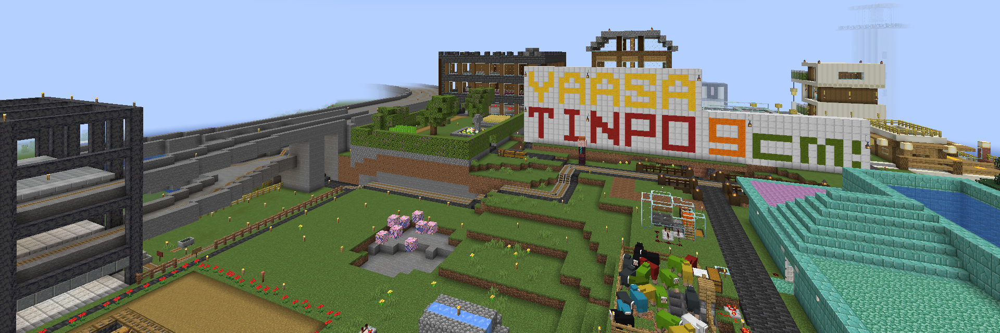
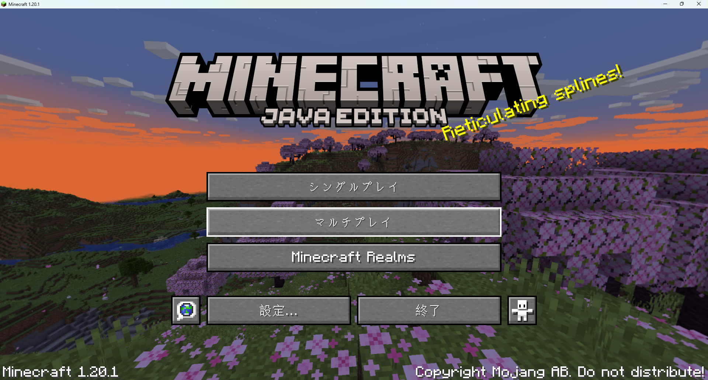
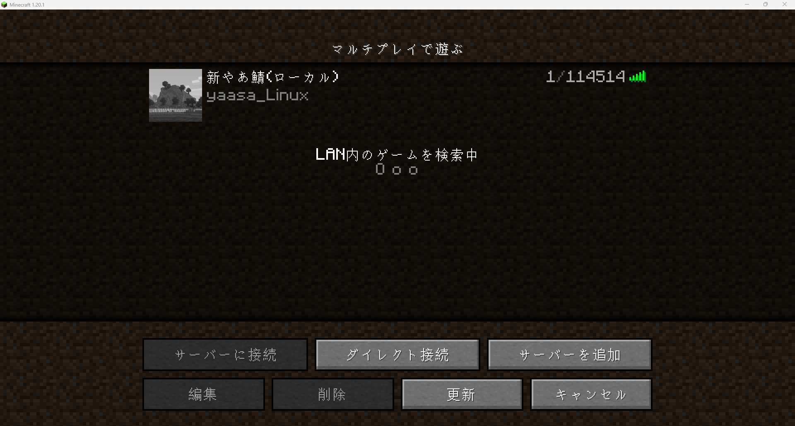
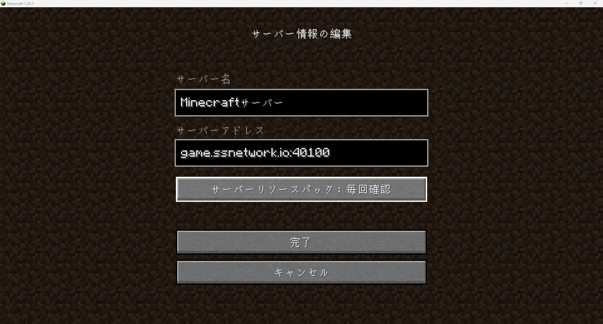
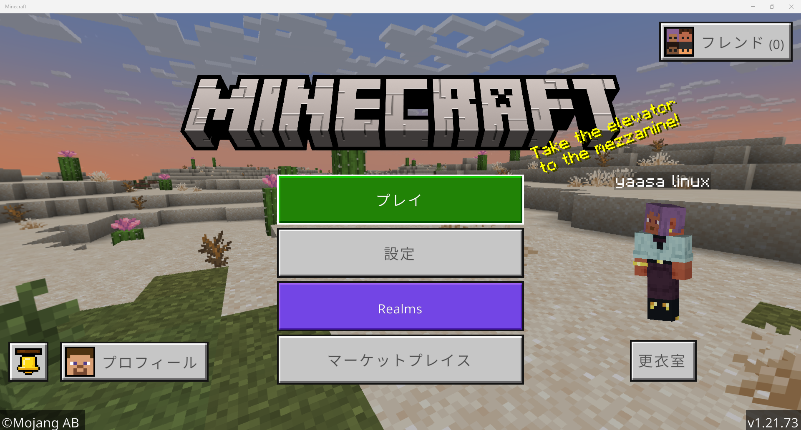
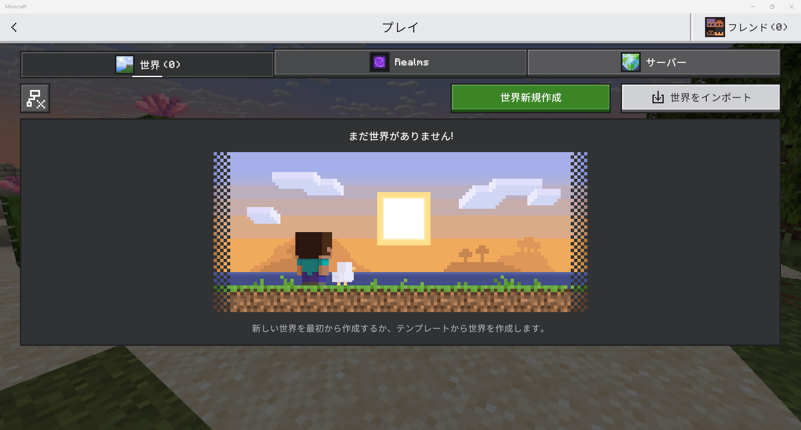
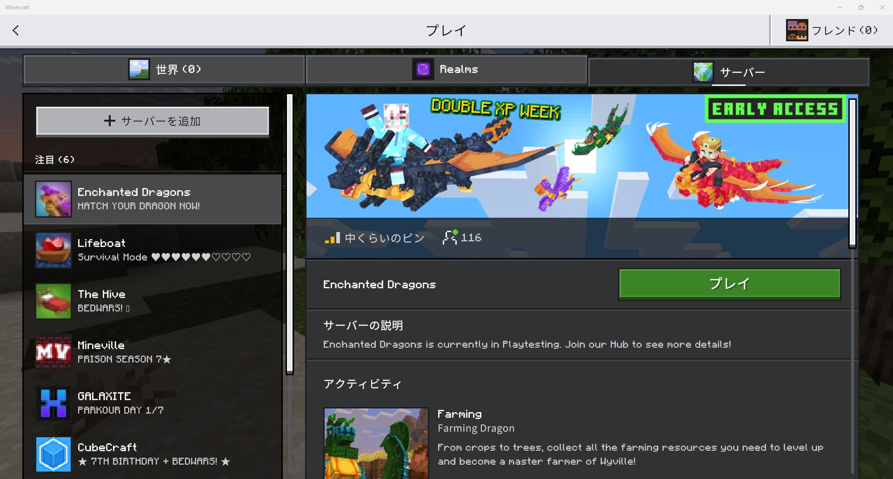
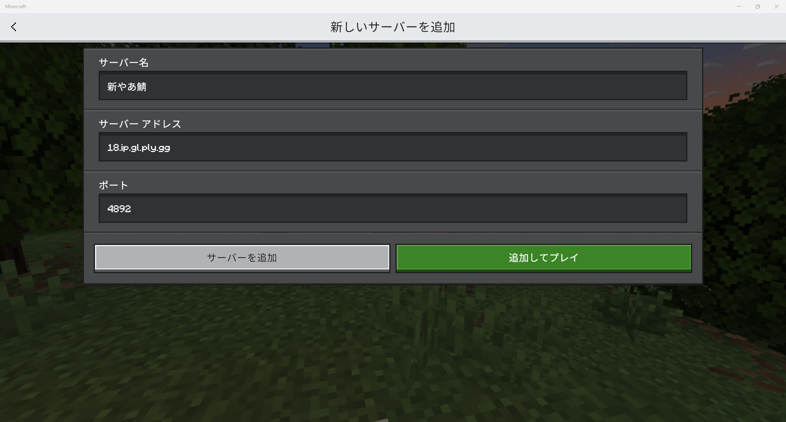

新やあ鯖について
新やあ鯖はサバイバルを軸に運営しています！
Minecraft Java Edition向けにサーバーを運営していますが、プラグインを導入して統合版でも遊べるようにしています！

情報の更新について
このWikiは新やあ鯖の情報をまとめたものです。
情報は随時更新する予定ですが、更新されてない情報もある可能性があります。
最新の情報はDiscordを見てください。
新やあ鯖はサバイバルを軸に運営しています！
Minecraft Java Edition向けにサーバーを運営していますが、プラグインを導入して統合版でも遊べるようにしています！

埋め込みでの読字が難しい場合こちらのサイトでお読みください。
このサーバーではJava版と統合版両方で参加できます。それぞれの参加方法を紹介します。
推奨サーバーアドレス : game.ssnetwork.io:40100
予備用サーバーアドレス : 25.ip.gl.ply.gg:43340
推奨バージョン : 1.20.1 (ViaVersionが入っているため1.20.1以上ならできると思います)
Java版は以下の手順で参加してください



サーバーアドレス: 18.ip.gl.ply.gg
ポート: 4892
推奨バージョン: 通常版の最新バージョンをお使いください(開発版はサポートしていません)




公式Wiki(このサイト): https://minecraft.wayokan.com/wiki.html
公式ホームページ: https://minecraft.wayokan.com/
公式Dynmap: https://map.wayokan.com/
公式Discord: Discord(モ神教)
管理人Twitter: @wayokan_beta
非公式ホームページ(制作者: NAO): https://minecraft.xtzi9859.f5.si/